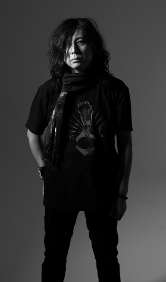
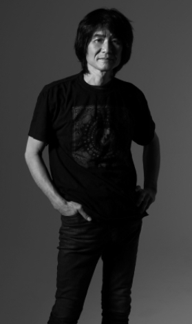
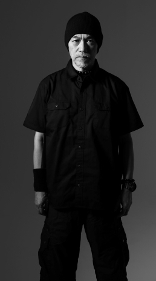

| HIZUMI<vo> | |||||
|  |
 |
 |
|||
| WATANABE<b> | HAYA<dr> | NOB<g> | |||
| Photo(HIZUMI・NOB・WATANABE・HAYA)：Miki Matsushima | |||||
JURASSIC JADE are...
HIZUMI : Vocals
NOB : Guitars.Cho
WATANABE: Bass.Vo
HAYA : Drums
| －１９８５－ |
|
１月・・・HIZUMI<Vo>、NOB<G>が京浜地域にある音楽スタジオで下働きをしていたHAYA<Dr>を発掘する。 |
| －１９８６－ |
| ６月・・・EP「A CRADLE SONG」（３曲）を発表。 |
| －１９８７－ |
| ３月・・・オムニバス・アルバム「SKULL THRASH ZONE VOLUMEⅠ」に２曲参加。 ５月・・・ミニLP「WAR BY PROXY（代理戦争）」（６曲）を発表。 ７月・・・G、BともにB.C.Rich日本代理店とモニター契約を交わす。 |
| －１９８８－ |
| ７月・・・オムニバス・アルバム「SKULL SMASH」に１曲参加。 |
| －１９８９－ |
|
１月・・・オムニバス・ビデオ「SKULL SMASH」に１曲参加。 |
| －１９９１－ |
| ３月・・・「GORE」リミックスCDを発表。 １０月・・・「誰かが殺した日々～NEVER FORGET THOSE DAYS～」（１２曲）を発表。オリコン・インディーズチャ－ト初登場８位を記録。 |
| －１９９５－ |
| １２月・・・新ベーシストYASUNORIを、スタジオペンタにて発掘。 |
| －１９９６－ |
|
３～６月・・・麻布某スタジオにて新譜制作敢行。 |
| －１９９７－ |
| ２月・・・フルアルバム「AFTER KILLING MAM」（１４曲）を発表。 |
| －１９９８－ |
| ２月・・・新譜（５曲＋ボーナストラック１曲）レコーディング完了。 ６月・・・ミニ・アルバム「ドク・ユメ・スペルマ」（６曲）発表。 |
| －２０００－ |
| ２月・・・新譜レコーディング完了。 ４月・・・オムニバス・アルバム「SURVIVE LIST 2」に１曲参加。 11月・・・フルアルバム「WONDERFUL MONUMENT」（９曲）を、HOWLING BULL RECORDSより発表。 |
| －２００1－ |
| 10月・・・10月27日・目黒Live Stationでのギグを以って、YASUNORI引退。後任にGEORGE加入。 |
| －２００４－ |
| ７月・・・新譜レコーディング完了。 10月・・・フルアルバム「LEFT EYE」（10曲）HWCA-1099を、HOWLING BULL RECORDSより発表。 |
| －２００５－ |
| 8月・・・韓国・大邱Culture&Arts Centerで行われた2005Dooryu rock festival 2nd DAYに出演。 12月･･･初期音源である『LIVE AT EXPLOSION』(ソノシート/1985年)/『A CRADLE SONG』(EP/1986年)/『WAR BY PROXY』(LP/1987年)を1枚にコンパイルし、更に1988年の幻のライヴ映像をカップリング（CD+DVD)して「黒い果実」(BTH-002)と銘打ってDISK UNIONよりリリース。 |
| －２００６－ |
| 8月・・・オムニバス・アルバム「Tribute to GARLIC BOYS」に一曲参加 11月・・・ミニ・アルバム「HEMIPLEGIA」（6曲）BTH007・オムニバスDVD「SKULL SMASH 21ST CENURY～BEHIND YOKE SYSTEMS 14」BTH006発表。 |
| －２００７－ |
| 2月・・・independence-D 2007 METAL/SHOCK ROCK DAYに出演。 |
| －２００８－ |
| 6月・・・ミニ・アルバム「ENDOPLASM」（6曲）発表。 |
| －２００９－ |
| 3月・・・「GORE」〈re-issue〉 KICS2603・「誰かが殺した日々（NEVER FORGET THOSE DAYS）」〈re-issue〉KICS2604をキングレコードから再発予定であったが、発売中止（発禁処分!!）になる。 |
| －２０1０－ |
| 3月・・・「GORE」〈re-issue〉HMHR81113-103 ・「誰かが殺した日々（NEVER FORGET THOSE DAYS）」〈re-issue〉HMHR81113-102をB.T.H. RECORDSから再発。 7月7日･･･ミニ・アルバム「AKATHISIA」・結成25周年記念ヒストリーDVD「懺悔の赤」リリース。 |
| －２０12－ |
| 3月7日･･･「天の咎」- THE B.Y.S. YEARS 1997～1998BHT-045/B.T.H. RECORDS 「地の仇花」 - THE HOWLING BULL YEARS 2000～2004BHT-046/B.T.H. RECORDSリリース。 |
| －２０14－ |
| 9月10日･･･「帰天」BHT-056/B.T.H. RECORDSリリース。 |
| －２０18－ |
| 4月・・・GEORGEI脱退。後任にWATANABE加入。 |
| －２０20－ |
| 12月9日・・・「id-イド-」BHT-066/B.T.H. RECORDSリリース。 |
| －２０23－ |
| 3月22日・・・「Nyx filia」BHT-081/B.T.H. RECORDSリリース。 |
BACK TO